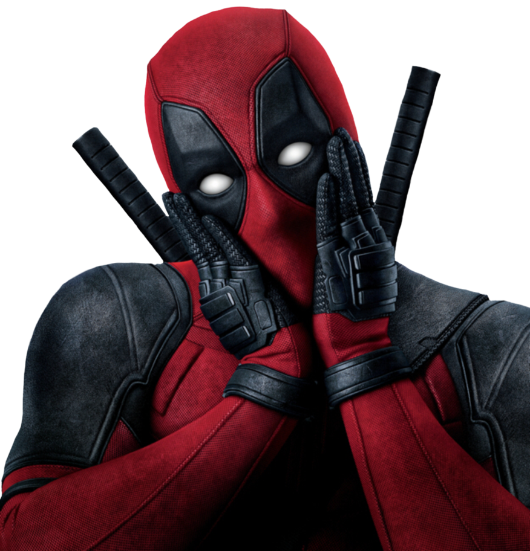

<!-- <div class="error-content">
  <div class="description-error">
    
    <span class="code-error">404</span>
    <span class="text">Erro na busca dos dados</span>
  </div>
  
</div> -->


<div class="repair">

  <section class="repair_section">
    <div class="repair_content">
      <h1 class="repair_content_title">Erro!</h1>
      <p class="repair_content_text">Serviço indisponivel!</p>
    </div>
  </section>
  <section class="repair_animation">
    <svg class="repair_canvas_upper" xmlns="http://www.w3.org/2000/svg" viewBox="0 0 1600 600" preserveAspectRatio="xMinYMid meet"
      width="1600" height="600">

      <g class="canvas_main canvas_pxl" data-svg-origin="40 20" style="transform: matrix3d(1, 0, 0, 0, 0, 1, 0, 0, 0, 0, 1, 0, 3.18805, -1.50556, 0, 1);">
        <g class="canvas_pxl_cloak" data-svg-origin="70 20" style="transform: matrix3d(0.999795, -0.020234, 0, 0, 0.020234, 0.999795, 0, 0, 0, 0, 1, 0, -5.02796, 1.42048, 0, 1);">
          <image x="70" y="20" width="270px" height="270px" preserveAspectRatio="xMinYMid slice" href="https://res.cloudinary.com/dpbdkwxoy/image/upload/v1534926492/pxl__cloak.svg"
            class="pxl_back">
          </image>
        </g>
        <g class="canvas_pxl_body">
          <image x="50" y="50" width="300px" height="200px" preserveAspectRatio="xMinYMid slice" href="https://res.cloudinary.com/dpbdkwxoy/image/upload/v1534926492/pxl.svg"
            class="pxl_img">
          </image>
        </g>
        <g class="canvas_pxl_hand" data-svg-origin="120 60" style="transform: matrix3d(0.999918, -0.0127812, 0, 0, 0.0127812, 0.999918, 0, 0, 0, 0, 1, 0, -0.757069, -7.72903, 0, 1);">
          <image x="120" y="60" width="50px" height="50px" preserveAspectRatio="xMinYMid slice" href="https://res.cloudinary.com/dpbdkwxoy/image/upload/v1534926492/pxl__lefthand.svg"
            class="pxl_lefthand">
          </image>
        </g>
        <g class="canvas_pxl_hand" data-svg-origin="290 170" style="transform: matrix3d(0.999918, -0.0127812, 0, 0, 0.0127812, 0.999918, 0, 0, 0, 0, 1, 0, -2.14911, -5.54724, 0, 1);">
          <image x="290" y="170" width="60px" height="60px" preserveAspectRatio="xMinYMid slice" href="https://res.cloudinary.com/dpbdkwxoy/image/upload/v1534926492/pxl__righthand.svg"
            class="pxl_righthand">
          </image>
        </g>
        <g class="canvas_spline_hand">
          <g class="canvas_spline_hidden">
            <line class="canvas_spline" x1="50" y1="150" x2="100" y2="150" stroke="#c3cced" stroke-width="3"
              data-svg-origin="50 150" style="transform: matrix3d(0.958994, 0, 0, 0, 0, 1, 0, 0, 0, 0, 1, 0, -45.8994, 0, 0, 1); transform-origin: 0px 0px 0px;"></line>
          </g>
          <g class="canvas_spline_hidden">
            <line class="canvas_spline" x1="40" y1="190" x2="90" y2="190" stroke="#c3cced" stroke-width="3"
              data-svg-origin="40 190" style="transform: matrix3d(0.506494, 0, 0, 0, 0, 1, 0, 0, 0, 0, 1, 0, -5.58444, 0, 0, 1); transform-origin: 0px 0px 0px;"></line>
          </g>
          <g class="canvas_spline_hidden">
            <line class="canvas_spline" x1="70" y1="220" x2="120" y2="220" stroke="#c3cced" stroke-width="3"
              data-svg-origin="70 220" style="transform: matrix(0, 0, 0, 1, 70, 0);"></line>
          </g>
        </g>
        <g class="canvas_pxl_eye" data-svg-origin="211 136" style="transform: matrix3d(0.97803, 0, 0, 0, 0, 1, 0, 0, 0, 0, 1, 0, 4.63564, 0, 0, 1); transform-origin: 0px 0px 0px;">
          <image x="200" y="125" width="22px" height="22px" preserveAspectRatio="xMinYMid slice" href="https://res.cloudinary.com/dpbdkwxoy/image/upload/v1534926492/pxl__lefteye.svg"
            class="pxl_lefteye">
          </image>
        </g>
        <g class="canvas_pxl_eye" data-svg-origin="234 179" style="transform: matrix3d(0.97803, 0, 0, 0, 0, 1, 0, 0, 0, 0, 1, 0, 5.14094, 0, 0, 1); transform-origin: 0px 0px 0px;">
          <image x="225" y="170" width="18px" height="18px" preserveAspectRatio="xMinYMid slice" href="https://res.cloudinary.com/dpbdkwxoy/image/upload/v1534926492/pxl__righteye.svg"
            class="pxl_righteye">
          </image>
        </g>
        <g class="canvas_pxl_back" data-svg-origin="120 170" style="transform: matrix3d(0.99998, 0.00639072, 0, 0, -0.00639072, 0.99998, 0, 0, 0, 0, 1, 0, 0.722709, -0.763415, 0, 1);">
          <image x="120" y="170" width="40px" height="40px" preserveAspectRatio="xMinYMid slice" href="https://res.cloudinary.com/dpbdkwxoy/image/upload/v1534926492/pxl__back.svg"
            class="pxl_back">
          </image>
        </g>
      </g>
    </svg>
  </section>
</div>

<script>
'use strict'

const canvasElems = document.querySelectorAll('.canvas_element');
const canvasBack = document.querySelectorAll('.canvas_back');
const canvasMain = document.querySelectorAll('.canvas_main');
const canvasFan = document.querySelectorAll('.canvas_fan_active');
const canvasSplineGroup = document.querySelectorAll('.canvas_spline_group');
const canvasPxl = document.querySelector('.canvas_pxl');
const canvasPxlHand = document.querySelectorAll('.canvas_pxl_hand');
const canvasPxlBack = document.querySelectorAll('.canvas_pxl_back');
const canvasPxlCloak = document.querySelectorAll('.canvas_pxl_cloak');
const canvasPxlEye = document.querySelectorAll('.canvas_pxl_eye');
const canvasSpline = document.querySelectorAll('.canvas_spline');
const canvasReaper = document.querySelectorAll('.canvas_reaper_body');
const canvasEnterprise = document.querySelectorAll('.canvas_enterprise');
const canvasCube = document.querySelectorAll('.canvas_portal_cube');
const canvasHead = document.querySelectorAll('.canvas_spirits_head');
const canvasChesterTongue = document.querySelectorAll('.canvas_chester_tongue');
const spline = new TimelineMax({ repeat: -1 });

TweenMax.staggerFromTo(canvasElems, 4, {
  x: 2000,
}, {
  x: -200,
  repeat: -1,
  z: 0.1,
  rotation: 0.01,
  ease: Linear.easeNone,
  scaleX: 1.001,
  force3D: true
}, 0.8);

TweenMax.staggerFromTo(canvasBack, 9, {
  x: 2600,
}, {
  x: -800,
  repeat: -1,
  z: 0.1,
  rotation: 0.01,
  ease: Linear.easeNone,
  scaleX: 1.001,
  force3D: true
}, 1.7);

TweenMax.staggerFromTo(canvasMain, 2, {
  y: -40
}, {
  y: 40,
  repeat: -1,
  yoyo: true,
  ease: Power1.easeInOut,
}, 0.3);

TweenMax.fromTo(canvasFan, 2, {
  y: -40,
}, {
  y: 40,
  repeat: -1,
  yoyo: true,
  ease: Power1.easeInOut,
});

TweenMax.fromTo(canvasSplineGroup, 2, {
  y: 20,
}, {
  y: 100,
  repeat: -1,
  yoyo: true,
  ease: Power1.easeInOut,
});

TweenMax.fromTo(canvasPxlHand, 2, {
  y: -10,
}, {
  y: 0,
  rotation: -10,
  repeat: -1,
  yoyo: true,
  ease: Power4.easeInOut,
});

TweenMax.fromTo(canvasPxlBack, 2, {
  x: 0,
}, {
  x: -5,
  rotation: 5,
  repeat: -1,
  yoyo: true,
  ease: Power4.easeInOut,
});

TweenMax.fromTo(canvasPxlCloak, 2, {
  x: 0,
}, {
  x: -20,
  rotation: -5,
  repeat: -1,
  yoyo: true,
  ease: Power1.easeInOut,
});

TweenMax.fromTo(canvasPxlEye, 2, {
  scaleX: 1,
  transformOrigin: '50% 50%',
}, {
  scaleX: 0.7,
  transformOrigin: '50% 50%',
  repeat: -1,
  yoyo: true,
  ease: Power4.easeInOut,
});

TweenMax.to(canvasFan, 1, {
  rotationZ: 360,
  transformOrigin: '50% 50%',
  repeat: -1,
  ease:Linear.easeNone,
});

TweenMax.fromTo(canvasPxl, 2, {
  x: -20
}, {
  x: 80,
  repeat: -1,
  yoyo: true,
  ease: Power1.easeInOut
});

spline.set(canvasSpline, {
  scaleX: 0
});

spline.staggerTo(canvasSpline, 0.4, {
  scaleX: 1,
  transformOrigin: '100% 50%',
  ease: Power1.easeOut
}, 0.2);

spline.staggerTo(canvasSpline, 0.4, {
  scaleX: 0,
  transformOrigin: '0% 50%',
  ease: Power1.easeOut
}, 0.2, '-=0.4');

TweenMax.staggerFromTo(canvasReaper, 1, {
  y: -30,
}, {
  y: 0,
  repeat: -1,
  yoyo: true,
  ease: Power1.easeInOut,
}, 0.2);

TweenMax.fromTo(canvasEnterprise, 3, {
  y: -80,
  rotation: 0,
}, {
  y: 0,
  rotation: 0,
  repeat: -1,
  yoyo: true,
  ease: Power1.easeInOut,
});

TweenMax.fromTo(canvasCube, 1, {
  y: 0,
}, {
  y: 100,
  repeat: -1,
  yoyo: true,
  ease: Power1.easeInOut
});

TweenMax.fromTo(canvasHead, 1, {
  rotation: 0,
  transformOrigin: '50% 50%',
}, {
  rotation: -60,
  transformOrigin: '50% 50%',
  repeat: -1,
  yoyo: true,
  ease: Power1.easeInOut
});

TweenMax.fromTo(canvasChesterTongue, 0.5, {
  y: 0,
}, {
  y: 5,
  repeat: -1,
  yoyo: true,
  ease: Power1.easeInOut
});

</script>
